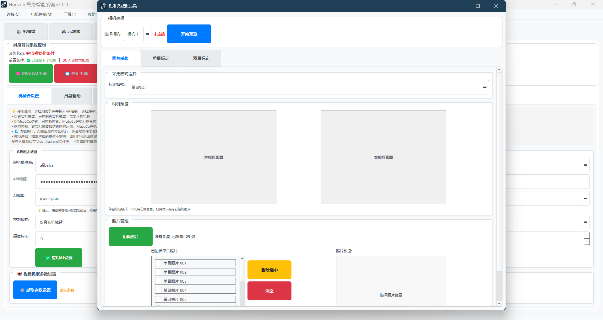

故障排除指南¶
快速解决使用过程中遇到的常见问题
本页面收集了用户在使用 Horizon_Arm 过程中最常遇到的问题和解决方案。建议您先在这里查找，大部分问题都能快速解决。
相关资源¶
- 📦 ROS2控制平台：https://github.com/RuXue-one/Horizon_ARM_ROS2
- 📚 完整文档：用户指南、操作手册、故障排除
🚨 紧急情况：任何时候按空格键可立即停止所有电机运动！
功能相关问题¶
机械臂控制：点击“移动到位置”无响应¶
- 确认已连接电机且已使能
- 检查“绝对/相对位置”是否符合当前零位设置
- 若使用仿真联动，先关闭联动后重试硬件动作
关节微调后末端位姿不更新¶
- 等待 1~2 秒或切换至“机械臂控制”标签后返回
- 仍不更新：重启软件再试（可能是系统渲染延迟）
单电机循环运动中断¶
- 检查“动作间隔时间”是否过短导致未到位即切步
- 降低角度/速度/加速度后重试
- 异常时可使用“紧急停止”
激活相关问题¶
首次激活失败/提示需要网络¶
- 确保电脑网络可用，稍后重试
- 关闭可能拦截网络的代理/杀毒/防火墙后再试
- 仍失败：请记录时间点与弹窗提示文字，联系技术支持
重复激活仍提示失败¶
- 确认序列号无误（区分 0/O、1/I）
- 确认用户标识（手机号/邮箱）输入正确
- 如果更换电脑或频繁更换设备，可能达到使用上限；请联系管理员处理
设备数量已达上限¶
- 当前序列号可绑定的设备数量已用尽
- 需要管理员清理或增加设备绑定数量
- 联系技术支持提供序列号和用户标识
已激活但重启后又要求激活¶
- 可能是杀毒软件误删了激活信息
- 重新激活一次即可恢复
提示： - 激活成功后，软件会记住此电脑的激活状态 - 序列号具有唯一性，不可在多台设备上同时使用 - 离线使用需要首次激活成功
序列号已锁定（已销毁）¶
现象：
❌ 序列号已锁定（已销毁），无法继续使用
可能原因： - 在许可证管理中主动执行了“销毁并锁定” - 管理员基于合规或安全要求执行锁定 - 检测到异常使用（如多设备滥用）触发锁定
处理建议： 1. 确认是否为误操作；如是，尽快联系管理员或技术支持复核 2. 如需继续使用，按流程申请新的序列号或办理授权迁移 3. 已锁定序列号不可恢复，请避免重复尝试激活
问题快速定位¶
| 问题类型 | 典型现象 | 跳转链接 |
|---|---|---|
| 🔌 连接问题 | 无法连接电机、串口错误 | 连接故障 |
| 🎮 手柄控制问题 | Joy-Con无法连接、无响应 | 手柄控制故障 |
| 🤖 AI控制问题 | 指令不执行、理解错误 | AI故障 |
| ⚙️ 电机控制问题 | 动作不准确、方向错误 | 电机故障 |
| 📷 相机标定问题 | 标定失败、图像异常 | 标定故障 |
| 🔌 IO控制问题 | ESP32连接失败、信号无响应 | IO控制故障 |
| 🖥️ 软件问题 | 界面卡死、崩溃退出 | 软件故障 |
连接故障¶
❌ 问题1：提示"无法打开串口"¶
现象：
❌ 无法打开串口 COM18
❌ 串口被占用或不存在
原因分析： - 串口号错误或串口被其他程序占用 - CANable设备未正确安装驱动
解决步骤：
- 检查设备管理器：
- 打开设备管理器
- 查看"端口(COM和LPT)"
-
确认CANable对应的COM口号
-
关闭占用程序：
- 关闭CANgaroo、putty等串口工具
-
重启电脑释放串口占用
-
重新安装驱动：
- 下载CANable官方驱动
- 重新安装USB转串口驱动

典型的串口连接错误
❌ 问题2：连接后提示"电机ID X 连接失败"¶
现象：
❌ 电机ID 3 连接失败：通信超时
✅ 已连接 5 个电机（缺少ID: 3）
原因分析： - 电机ID设置错误或重复 - 电机未上电或连接线接触不良 - 电机故障
解决步骤：
-
检查电机ID：
-
确保ID为1-6且无重复
-
可使用电机调试工具检查ID设置
-
检查电源和连线：
-
确认故障电机已上电（LED指示灯亮起）
-
检查连接线是否松动
-
单独测试：
-
只连接故障电机进行测试
- 确认单个电机工作正常
❌ 问题3：连接成功但无法控制¶
现象：
- 显示"已连接6个电机"
- 发送指令后电机不动作
- 无错误提示
解决步骤：
-
检查使能状态：
-
进入"单电机控制"页面
- 点击"使能"按钮
-
确认电机状态为"已使能"
-
测试基础功能：
-
先尝试单个关节的小角度运动
- 确认电机方向和减速比设置正确
手柄控制故障¶
❌ 问题1：Joy-Con 无法配对¶
现象：
❌ 蓝牙设备列表中找不到 Joy-Con
可能原因： 1. Joy-Con 未进入配对模式 2. 蓝牙适配器未启用 3. Joy-Con 电量不足
解决方法：
1. 正确进入配对模式
- 按住 Joy-Con 侧面小圆按钮（同步按钮）3秒
- 指示灯应该快速闪烁
- 在Windows蓝牙设置中点击"添加设备"
2. 检查蓝牙功能
- Windows设置 → 蓝牙和其他设备
- 确认蓝牙开关已打开
- 尝试搜索其他蓝牙设备测试功能
3. 充电后重试
- 使用充电握把或Switch主机为Joy-Con充电
- 充电至少30分钟后重试配对
❌ 问题2：手柄已配对但软件连接失败¶
现象：
❌ 无法连接左Joy-Con
❌ 无法连接右Joy-Con
可能原因： 1. Joy-Con 蓝牙连接不稳定 2. 缺少必要的Python库 3. 其他程序占用Joy-Con
解决方法：
1. 重新连接手柄
- 在Windows蓝牙设置中移除Joy-Con
- 重启电脑
- 重新配对Joy-Con
- 启动软件再次尝试连接
2. 检查依赖库
- 确保已安装 pyjoycon 库
- 命令：
pip install pyjoycon
3. 关闭其他程序
- 关闭可能使用Joy-Con的其他软件
- 特别是Switch相关的模拟器或测试工具
❌ 问题3：手柄连接后无响应¶
现象： - 手柄已连接但机械臂不动 - 按键无任何反应
可能原因： 1. 机械臂未连接或未使能 2. 手柄控制功能未启动 3. 进入了紧急停止状态
解决方法：
1. 检查机械臂状态
- 确认机械臂已通过串口连接
- 确认所有电机已使能
- 查看状态监控中的电机状态
2. 重新启动手柄控制
- 在软件中点击"断开Joy-Con"
- 等待3秒
- 重新点击"连接Joy-Con"
3. 解除紧急停止
- 如果之前按过HOME键紧急停止
- 需要重新使能所有电机
- 然后重新启动手柄控制
❌ 问题4：控制方向与预期相反¶
现象： - 推动摇杆向前，机械臂向后移动 - 按键方向与实际运动方向不符
可能原因： 1. 电机方向参数设置错误 2. 坐标系理解有误
解决方法：
1. 调整电机方向参数
- 工具 → 电机参数设置
- 找到对应关节的方向设置
- 切换"正向"/"反向"
- 保存并重新加载配置
2. 参考标准方向
- 查看用户指南中的"6轴运动方向参考标准"
- 对比GIF动画确认正确方向
- 逐个关节测试和调整
❌ 问题5：手柄频繁断开连接¶
现象：
⚠️ 左Joy-Con连接丢失
⚠️ 正在重新连接...
可能原因： 1. 蓝牙信号弱或有干扰 2. Joy-Con电量不足 3. 蓝牙适配器兼容性问题
解决方法：
1. 改善蓝牙连接
- 手柄靠近电脑（距离<2米）
- 移除蓝牙信号干扰源（WiFi路由器、微波炉等）
- 减少金属物体遮挡
2. 充足电量
- 充满电后使用
- 避免低电量状态下长时间使用
3. 更换蓝牙适配器
- 使用外置蓝牙4.0或更高版本适配器
- 推荐品牌：CSR、Broadcom芯片的适配器
❌ 问题6：运动不流畅或有延迟¶
现象： - 推动摇杆后机械臂延迟响应 - 运动卡顿不连贯
可能原因： 1. 蓝牙通信延迟 2. 电脑性能不足 3. 速度设置过低
解决方法：
1. 优化蓝牙连接
- 参考上述"频繁断开"的优化方法
- 确保蓝牙信号强度良好
2. 释放系统资源
- 关闭不必要的后台程序
- 特别是占用CPU较高的软件
- 确保内存充足
3. 调整控制参数
- 适当提高速度倍率（方向键↑）
- 关闭微调模式（如果已启用）
- 在配置文件中调整步长参数
❌ 问题7：夹爪控制不工作¶
现象： - 按A/B键无反应 - 提示"夹爪未连接"
可能原因： 1. 夹爪控制器未连接 2. 串口配置错误 3. 夹爪角度参数不合理
解决方法：
1. 连接夹爪
- 工具 → 夹爪连接
- 选择正确的串口
- 点击连接按钮
- 等待连接成功提示
2. 检查参数
- 确认张开角度（通常为0°）
- 确认闭合角度（通常为90°）
- 角度范围应在0-90°之间
3. 测试夹爪
- 在夹爪连接界面先单独测试
- 确认夹爪能正常开合
- 再尝试通过手柄控制
⚠️ 使用建议¶
首次使用手柄控制
- 从低速度开始（50%速度倍率）
- 先在开阔空间测试基本移动
- 熟练后再进行复杂操作
- 随时准备按HOME键紧急停止
提高控制精度
- 使用微调模式（按下摇杆）
- 降低速度倍率
- 关节模式比笛卡尔模式更精确
- 结合仿真联动预演动作
详细使用说明： - 完整的手柄控制指南请参考 Joy-Con手柄控制指南 - 包含详细的按键映射、操作技巧和参数配置
AI控制故障¶
❌ 问题4：输入指令后没有反应¶
现象：
- 在具身智能页面输入指令
- 点击执行后没有任何动作
- 对话框显示空白或错误
原因分析：
- AI服务配置错误
- 网络连接问题
- API密钥无效
解决步骤：
-
检查AI配置：
-
进入具身智能页面的设置选项
- 确认API密钥正确且有效
-
检查网络连接
-
测试AI服务：
-
尝试简单的语音或文字指令
-
观察系统响应和错误提示
-
查看错误日志：
-
检查控制台输出的错误信息
- 根据错误码查找具体原因
❌ 问题5：AI理解指令错误¶
现象：
- 输入"向上抬起"，但机械臂向下运动
- 指令执行与预期完全不符
解决步骤：
-
使用更清晰的指令：
-
避免模糊表达："抬起" → "第2关节向上转动30度"
-
使用具体的动作描述
-
检查电机配置：
-
进入"电机参数设置"
- 确认减速比和方向设置正确
电机控制故障¶
❌ 问题6：机械臂动作方向错误¶
现象：
- 指令"向右"但机械臂向左
- 关节转动方向与预期相反
- 某个轴的运动方向与仿真不一致
解决步骤：
-
对比标准方向：
-
查看用户指南中的"6轴运动方向参考标准"
- 使用单电机控制测试各轴的正方向运动
-
对比实际运动与参考GIF是否一致
-
修改电机方向：
-
菜单："工具 → 电机参数设置"
- 找到运动方向错误的电机
- 将方向设置从"正向"改为"反向"，或从"反向"改为"正向"
-
点击"保存设置"后重新加载配置
-
验证调整结果：
-
返回单电机控制页面
- 重新测试该轴的正方向运动
-
确认运动方向与参考标准一致
-
重新标定：
-
如果是末端位置控制问题
- 重新进行手眼标定
各轴标准正方向（以机械臂自身坐标系为准）：
- 1轴：基座逆时针旋转
- 2轴：大臂向下摆动
- 3轴：小臂向下摆动
- 4轴：腕部右转（机械臂自身方向）
- 5轴：腕部向下俯仰
- 6轴：末端右转（机械臂自身方向）

电机参数设置界面
❌ 问题7：动作幅度不正确¶
现象：
- 指令"小幅度移动"但动作很大
- 角度控制不精确
解决步骤：
-
检查减速比设置：
-
确认每个电机的减速比参数正确
-
常见减速比：1:50, 1:100等
-
校准零点：
-
使用"清零当前位置"功能
- 重新设定机械臂初始姿态
相机标定故障¶
❌ 问题8：集成相机无法启动¶
现象：
❌ 无法启动双目相机系统
❌ 相机初始化失败
解决步骤：
-
检查系统连接：
-
确认机械臂电源正常
-
检查相机模块的连接状态
-
重启相机系统：
-
在视觉抓取页面点击"重启相机"
-
或重启整个机械臂系统
-
检查相机设置：
-
确认相机设备ID设置正确（通常为0）
- 检查分辨率和帧率设置是否合理
❌ 问题9：手眼标定精度差¶
现象：
- 标定完成但机械臂定位不准确
- 视觉坐标与实际位置偏差大
解决步骤：
-
增加标定点数量：
-
至少采集15个不同姿态的标定点
-
确保覆盖整个工作空间
-
改善标定条件：
-
确保光照充足均匀
- 棋盘格图案清晰无变形
- 避免相机或机械臂抖动

手眼标定操作界面
全局紧急停止问题¶
❌ 问题10：紧急停止无响应¶
现象：
- 按空格键后没有反应
- 电机继续运动未停止
解决步骤：
-
检查焦点状态：
-
确认不在输入框中按空格
-
点击空白区域再按空格键
-
检查电机连接：
-
确认电机已正确连接
-
查看连接状态显示
-
使用物理急停：
-
立即使用物理急停按钮
- 断开电源确保安全
❌ 问题11：紧急停止误触发¶
现象：
- 在输入框中按空格也触发停止
- 频繁意外触发紧急停止
解决步骤：
-
更新到最新版本：
-
新版本已修复输入框误触发问题
-
检查键盘：
-
确认空格键没有卡住
- 检查是否有键盘快捷键冲突
具身智能问题¶
❌ 问题12：流式执行异常¶
现象：
- 流式执行中断或错误
- 任务队列堵塞
解决步骤：
-
切换执行模式：
-
使用传统执行模式
-
避免复杂任务的流式执行
-
清理任务队列：
-
重启具身智能系统
-
清除待执行任务
-
检查AI配置：
-
确认API密钥有效
- 检查网络连接稳定性
❌ 问题13：视觉抓取不准确¶
现象：
- 抓取位置偏差大
- 深度估计错误
解决步骤：
-
重新标定：
-
完成相机标定
-
重新进行手眼标定
-
调整参数：
-
检查TCP偏移设置
-
调整深度估计参数
-
环境优化：
-
确保光照充足均匀
- 避免反光和阴影
示教器问题¶
❌ 问题14：示教程序无法录制¶
现象：
- 点击录制按钮无响应
- 录制的动作点丢失
解决步骤：
-
检查电机状态：
-
确认所有电机已连接且使能
-
检查关节位置读取正常
-
清理录制数据：
-
清除已录制的错误数据
-
重新开始录制过程
-
参数检查：
-
确认插补类型设置正确
- 检查速度和加速度参数
IO控制故障¶
❌ 问题16：ESP32连接失败¶
现象：
❌ ESP32连接失败：未收到正确的PONG响应
❌ 无法打开串口 COM3
原因分析：
- ESP32串口号错误或被占用
- 波特率设置不正确
- ESP32固件异常或未正确烧录
解决步骤：
-
检查串口设置：
-
打开设备管理器确认ESP32对应的COM口号
- 确保波特率设置为115200
-
关闭其他可能占用串口的程序
-
检查硬件连接：
-
确认ESP32供电正常
- 检查USB数据线是否正常（非充电线）
-
重新插拔USB连接
-
重启设备：
-
断开ESP32电源后重新连接
- 重启上位机软件
❌ 问题17：DI信号无响应¶
现象：
- 外部信号触发但机械臂不执行动作
- DI状态显示正常但作业未启动
解决步骤：
-
检查IO映射配置：
-
确认DI映射中的触发方式设置正确
- 检查关联的作业名称是否存在
-
验证GPIO引脚配置与实际接线一致
-
检查外部控制模式：
-
确认已进入"外部控制模式"
-
检查ESP32连接状态正常
-
检查作业配置：
-
确认关联的作业步骤配置完整
- 检查机械臂连接状态
- 验证作业中的参数设置正确
❌ 问题18：DO输出无效果¶
现象：
- 手动控制DO输出无反应
- 作业中的IO控制步骤不执行
解决步骤：
-
检查硬件连接：
-
确认DO引脚接线正确
- 检查外部设备的供电和接地
-
验证负载电流在ESP32承受范围内（<40mA）
-
检查DO配置：
-
确认DO映射配置正确
- 检查GPIO引脚设置与实际接线一致
-
验证输出电平设置（高电平/低电平）
-
测试DO功能：
-
使用万用表测量DO引脚电压
- 在IO控制界面手动测试DO开关
- 检查ESP32状态和响应
❌ 问题19：作业执行异常¶
现象：
- 作业开始执行但中途停止
- 部分步骤执行，部分步骤跳过
解决步骤：
-
检查作业步骤：
-
确认所有步骤参数配置完整
- 检查关节角度是否在安全范围内
-
验证夹爪控制步骤的连接状态
-
检查设备状态：
-
确认机械臂所有电机连接正常
- 检查夹爪连接状态（如使用夹爪控制步骤）
-
验证ESP32通信正常
-
查看执行日志：
-
在IO控制界面查看详细错误信息
- 根据错误提示调整作业配置
- 必要时重新创建作业
❌ 问题20：IO状态显示异常¶
现象：
- DI/DO状态显示为红色或灰色
- 状态更新不及时或不准确
解决步骤：
-
检查配置一致性：
-
确认IO映射中的GPIO配置与ESP32固件一致
- 检查引脚编号是否正确
-
验证上拉电阻配置
-
检查通信状态：
-
确认ESP32连接正常
- 检查串口通信是否稳定
-
重新连接ESP32
-
重新配置：
-
删除错误的IO映射配置
- 重新添加正确的IO映射
- 保存配置并重启系统
提示：IO控制系统的详细操作说明请参考 IO控制系统操作说明
软件故障¶
❌ 问题15：界面卡死或崩溃¶
现象：
- 点击按钮后界面无响应
- 程序突然关闭退出
解决步骤：
-
重启程序：
-
关闭所有相关进程
-
重新运行程序
-
检查系统资源：
-
确保内存充足（建议8GB+）
-
关闭其他占用资源的程序
-
查看错误日志：
-
检查控制台输出
- 查看系统事件日志
❌ 问题11：MuJoCo仿真无法显示¶
现象：
- 3D仿真窗口不出现
- 提示MuJoCo相关错误
解决步骤：
- 检查MuJoCo安装：
bash
python -c "import mujoco; print('MuJoCo安装正常')"
-
更新显卡驱动：
-
下载最新的显卡驱动
-
重启电脑
-
使用兼容模式：
-
修改MuJoCo渲染设置
- 降低渲染质量
仍然无法解决？¶
📞 获得更多帮助¶
-
收集错误信息：
-
截图错误界面
- 复制控制台错误信息
-
记录操作步骤
-
提交问题报告：
-
详细描述问题现象
- 提供系统环境信息
- 附上错误截图和日志
预防性维护建议¶
定期检查项目¶
- 每周：检查CAN线连接，清洁设备
- 每月：更新软件版本，备份配置文件
- 每季度：重新标定相机，检查电机磨损
最佳实践¶
- 使用前先进行仿真测试
- 定期保存重要的配置参数
- 建立操作日志记录
💪 大部分问题都有解决方案，不要放弃！
如果本页面没有找到答案，请联系我们的技术支持团队
故障排除指南 | 让问题解决更高效
© 2025 Horizon Arm • 智能、灵活、易用